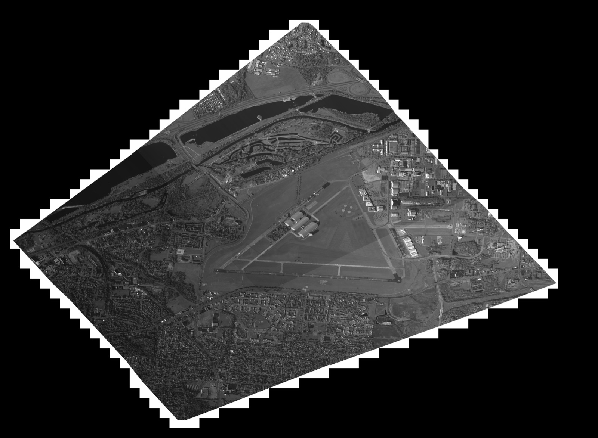

Reading and Writing NITF Files with NITRO and OpenCV
August 22, 2026The National Imagery Transmission Format (NITF) is the standard container for government and defense imagery. Unlike a PNG or a JPEG, a NITF file is a package: one or more image segments alongside graphic, text, and data extension segments carrying the metadata that makes the pixels useful — sensor, collection geometry, timestamps, and geolocation. That structure is exactly why you need a library to open one, and why the first thing most image processing workflows want is a way to get the pixels out and into OpenCV, numpy, PIL, or PyTorch.
This repo shows examples of reading and writing NITF files.
NITF input and output (IO) is done using the NITRO library.
In one example, the NITF image data is written out to a *.png using the OpenCV library. This is useful because the image data can then be processed using OpenCV, numpy, PIL, PyTorch, etc.
All of the code discussed below lives in the nitf_io repository on GitHub.
NITRO and OpenCV libraries are included as submodules and are under their own licenses. After cloning the repo you can run git submodule update --init --recursive to get the submodules.
NITF Data
NITF data can be obtained from Sensor Data Management Database. Specifically, this code was tested on the WPAFB 2009 dataset.
You’ll need to create a free account to access the data.
I used the WPAFB-21Oct2009-TRAIN_NITF_003.zip (333 MB) dataset to keep the file size reasonable.
Here is the output of 0091021203201-01000605-VIS.ntf.r1 converted to a png using the ./write_images program.

write_images. The original is 15360 x 11264 pixels; it has been downscaled here for the web. The black border and stair-stepped edges are the collection geometry — the imaged area sits rotated inside the rectangular image segment.Docker Container
The examples in this repo can be built in a container. The Dockerfile will build NITRO and OpenCV.
docker build -t dennisfgardner/nitf_io:1.0 .
To build the code in this repo, mount the source and NITFs directories.
docker run -itv ./src:/home/nitf_io/src -v ./nitfs:/home/nitf_io/nitfs dennisfgardner/nitf_io:1.0 /bin/bash
The examples can be built using the following cmake command.
mkdir build
cmake -S ./src -B ./build
cmake --build ./build
cd build
Example #1 Print NITF Header Information
./print_header <nitf_filepath>
Example #2 Read Image Segment(s) and Write Out as PNG(s)
This is useful to visualize the image segment data.
./write_images <nitf_filepath>
This will write a file called output0.png.
If you’re working inside the container then you can copy the output image to the host (using another terminal) using the following command:
docker cp <container_id_or_name>:/path/to/file/inside/container /path/to/host/destination
Example #3 Read In NITF and Write Out Same NITF
This is useful if the initial NITF is compressed and you’d like an uncompressed version.
round_trip <input_nitf_filepath> <output_nitf_filepath>
Memory Leak Checking
I used valgrind to check for memory leaks.
apt install valgrind
valgrind --leak-check=full --show-leak-kinds=all --track-origins=yes --verbose ./print_header <input_nitf_filepath>
valgrind --leak-check=full --show-leak-kinds=all --track-origins=yes --verbose ./write_images <input_nitf_filepath>
valgrind --leak-check=full --show-leak-kinds=all --track-origins=yes --verbose ./build/round_trip <input_nitf_filepath> <output_nitf_filepath>
Future Work
- ortho rectify the image
- overlay on map, like google earth
- do some AI/ML on the image to identify object and structures in the image
The full source — the three example programs, the NITRO/OpenCV submodules, and the Dockerfile that builds them — is on GitHub at dennisfgardner/nitf_io.
Source code: https://github.com/dennisfgardner/nitf_io